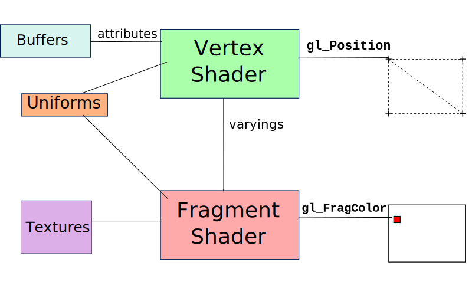
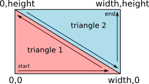
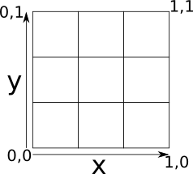
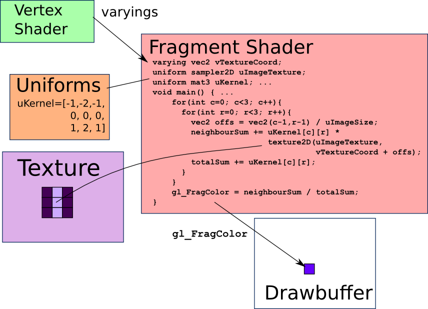
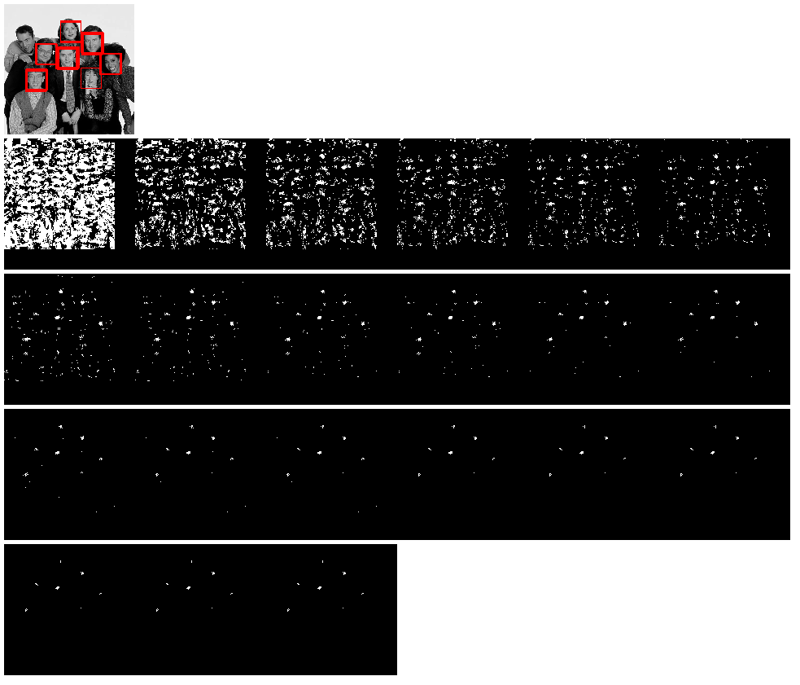
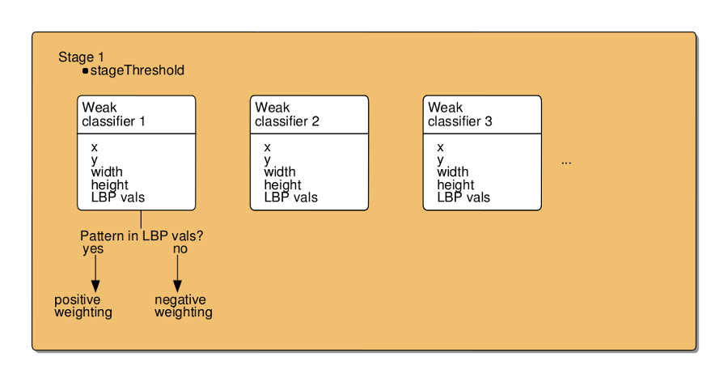
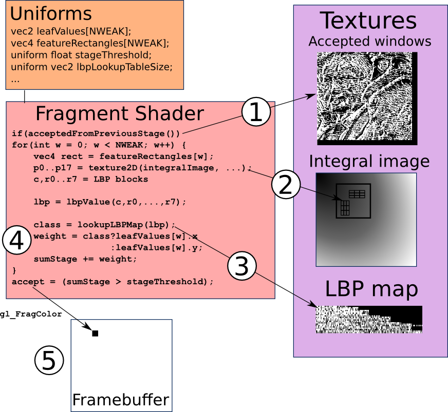
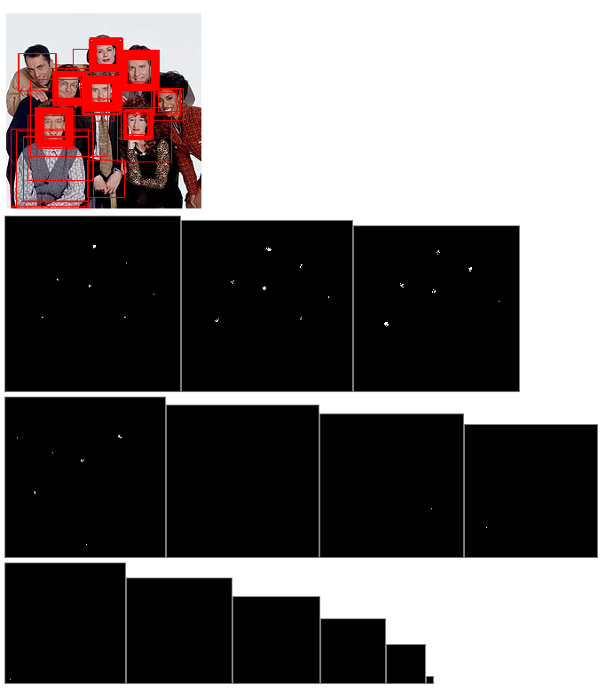
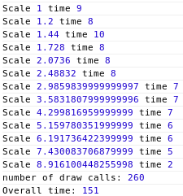
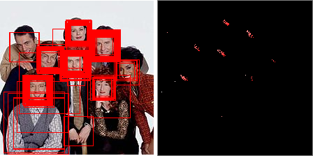

Face Detection in the Browser with WebGL
Our Toolbox
OpenGL ES 2.0 in the Browser
Version 1.0.1 released, experimental support in browsers
A 3D Graphics API...in theory
But can be used for general purpose computation
getUserMedia API - webcam access
WebGL Architecture
- Shader Programs - written in a C-like language, GLSL

Computation on a Grid
Mapping graphical concepts to computational concepts

Vertex coordinates = computational range

Texture coordinates = computational domain
Convolution Fragment Shader
- An example of "computation on a grid"
- Fragment shader = "inner loop"

Sobel Edge Detection Shader
- Convolution as "gathering"
Face Detection
Viola and Jones (2001)
Training - learning from sample images (focus of my Industrial Placement)
Detection - finding faces in images
Local Binary Patterns

Visualising the Cascade

Inside a Stage


Stage Fragment Shader

Scaling
- Scaling image vs scaling detector

Scaling Timings (320x240 image)

- Reading back for every scale
Scaling with shared output texture
- Use Blending to preserve previous values

70 ms @ 320x240
Optimisations
Some of which worked:
- Z-Culling - using the depth buffer to eliminate windows
Others which didn't
- Moving code to the vertex shader
- Multiple windows/scales in one go
- Chasing the bottlenecks - the ultimate bottleneck is the texture fetches
Applications
- Kalman filter for smoothing
- Using Lytro.com embedded widget
Questions?
Some ideas on further work:
- Implementing on other devices (Smartphones - OpenGL ES)
- "GPU friendly" cascade and features
- Making WebGL more computation-friendly
- Further computer vision in WebGL - eye tracking, optical flow
Stage times
 ←
→
←
→
/
#